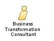

| Role: Business Transformation Consultant (040711) |
 |
|
Relationships
 |
Main Description
This role also identifies strategic capabilities needed to create and sustain one or more sources of competitive advantage. These capabilities may come in the form of process, information technology, organisation enablement, or knowledge. They identify best practices and client performance gaps, if any. They use tools to identify, align, and change the factors that affect performance, stability, and teaming and develops comprehensive transformation recommendations. |
Staffing
| Skills |
|
|---|
More Information
| Supporting Materials |
|---|
| © Copyright IBM Corp. 1987, 2012 All Rights Reserved Property of IBM These materials are intended only for use as part of an IBM engagement |